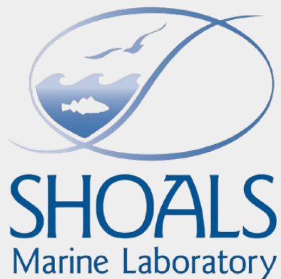
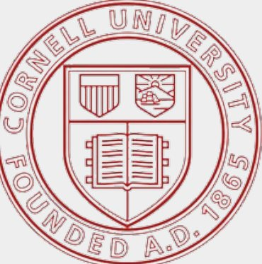

Acknowledgements
Thank you to Mike Sigler and Rebecca Atkins for your help with my 2025 Underwater Ecology and Oceanography SURG project. It was wonderful getting to know you - my project wouldn’t be the same without your guidance. I’d also like to thank the entire island team for making my time here truly amazing and helping facilitate the research that filled this book. I also appreciate everyone who took the time to flip through this and hope it will prove useful to projects in the future! Lastly, thanks to anyone who adds to this in the future! - Marshall Mumford SURG ‘25
Thanks also to Eugene Won, SML Academic Coordinator, Steve Picken, past SML captain, Ava Brumfield, SURG 2025, Maggie Winchester-Weiler, Shark Biology and Conservation Teaching Faculty, for sharing their sampling experience.


Future work
Still needed:
- Pictures for mummichog, herring, juvenile sandlance, and rock gunnel
- Test a bottle trap for mummichogs
Anyone can help fill these gaps through the editable Google Slides version.